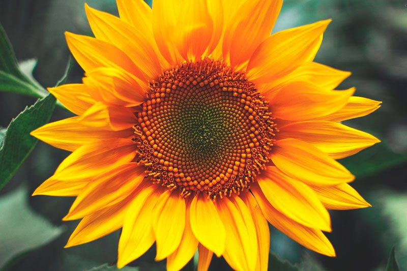

TIPOS DE FLORES
GIRASOLES
 Empezamos nuestra lista de flores con los girasoles, una bonita planta originaria de América del Norte dónde las antiguas comunidades indígenas y las actuales lo consideran una planta sagrada puesto que va girando a lo largo del día para orientarse hacia el sol. Se trata de unas flores que pueden llegar a medir seis metros, de color amarillo anaranjado en cuyo centro se crean las semillas que una vez maduras pueden ser consumidas a modo de pipas
ROSAS
Las rosas son naturales de América del Norte, de Europa y de Asia. Hay tres tipos de flores de rosas, clasificándose en rosas de matorral, arbustos y trepadoras. Existe un gran número de clases de rosas diferentes y sus colores son realmente variables, pudiendo ser desde blancas hasta rojas pasando por naranja, amarillo y rosa. Existen también algunas variedades realmente exóticas que pueden florecer en morado o en tonos verdes .
HORTENCIA
 La hortensia es una planta ornamental proveniente del sur y del este de Asia, de zonas de China, de Corea, de Jamón y también de Indonesia y del Himalaya, así como también de distintas zonas de América. Existen muchas variedades o clases de flores, pero suelen ser arbustos de hasta tres metros, otras son árboles pequeños y otras son lianas. La hoja puede ser caduca o perenne, pero las más cultivadas suelen ser caducas
La hortensia es una planta ornamental proveniente del sur y del este de Asia, de zonas de China, de Corea, de Jamón y también de Indonesia y del Himalaya, así como también de distintas zonas de América. Existen muchas variedades o clases de flores, pero suelen ser arbustos de hasta tres metros, otras son árboles pequeños y otras son lianas. La hoja puede ser caduca o perenne, pero las más cultivadas suelen ser caducas
TULIPANES
 Los tulipanes son unas plantas clásicas apreciadas por floristas y amantes de las plantas. Son originarios de Asia y de Europa y también están presentes en algunas zonas de Oriente Medio. Actualmente se cultivan en todo el mundo, en 100 especies diferentes y las flores salen desde bulbos subterráneos. Las variedades de colores que incluyen van desde el amarillo hasta el ciruela pasando por el rojo o el bronce.
Los tulipanes son unas plantas clásicas apreciadas por floristas y amantes de las plantas. Son originarios de Asia y de Europa y también están presentes en algunas zonas de Oriente Medio. Actualmente se cultivan en todo el mundo, en 100 especies diferentes y las flores salen desde bulbos subterráneos. Las variedades de colores que incluyen van desde el amarillo hasta el ciruela pasando por el rojo o el bronce.
DALIAS
> Flores bonitas hay muchas, pero pocas son tan elegantes como las dalias. Éstas son unas plantas que se cultivan durante la primavera desde un bulbo. Son una planta muy apreciada porque presentan tonos realmente bonitos y vivos. Es una planta de jardín que necesita pocos cuidados, aunque necesitará un poco más de atención si se trata de una planta algo más alta. Existen variedades de distinto tamaño y todas necesitan bastante luz solar y un suelo que tenga suficientes nutrientes.
CLAVEL
El clavel es originaria del ártico de América del Norte y de Sudáfrica, pero actualmente se cultiva en muchas más partes del mundo. Existen diferentes tipos de flores del clavel: el común, el chino, el del poeta, el coronado y el de roca. Como curiosidad, el chino es el más admirado por los amantes de la jardinería y la ciudad de Cádiz tiene una de las mayores producciones de claveles.